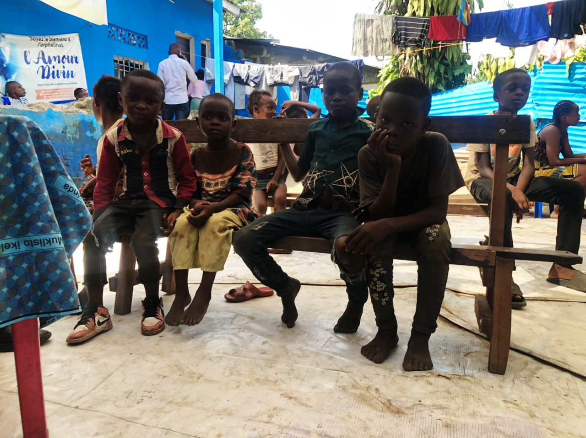

Community Healing
We provide trauma-informed counseling, peer support groups, and restorative workshops for women and youth.

A-SALEM
A-SALEM is a grassroots movement born in the Democratic Republic of Congo, led by Alice Apendeke to support survivors of violence, empower women and children, and restore dignity through healing, education, and community-led solutions.
How A-SALEM Helps
A-SALEM exists to bring peace, safety, and opportunity to the most vulnerable communities in eastern Congo. Rooted in founder Alice Apendeke’s own journey through conflict and trauma, A-SALEM began as a safe place for survivors to share their stories and rebuild together.
One of our main goals is to help children continue their education by raising funds for school fees, uniforms, and supplies. Education in our region is not free, and without support boys and girls often must repeat grades or stop attending school entirely.

We provide trauma-informed counseling, peer support groups, and restorative workshops for women and youth.
Through school fee funding, uniforms, and tutoring, A-SALEM helps boys and girls stay in school and avoid repeating grades because they cannot afford tuition.
Training in small business, crafts, and agriculture gives families the tools they need to earn stable income.